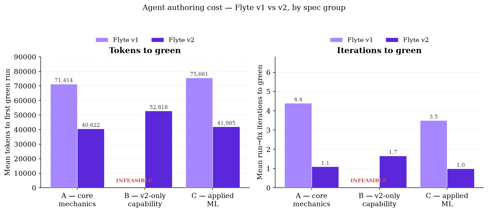
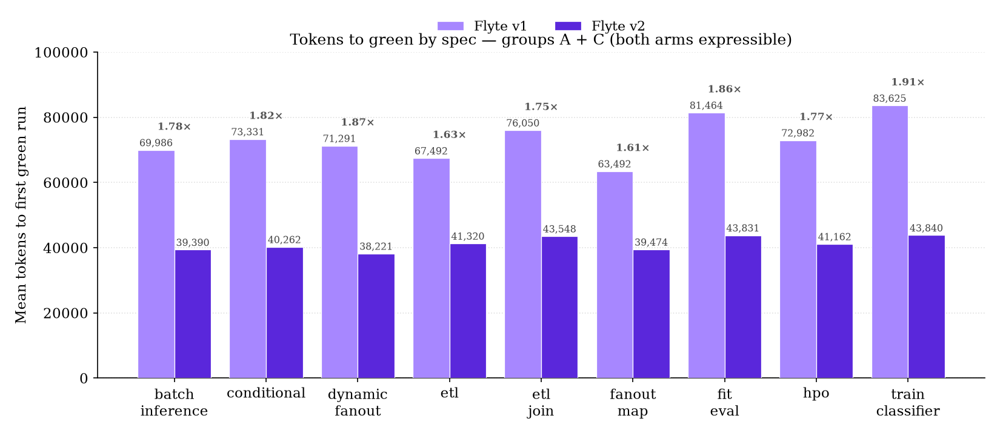
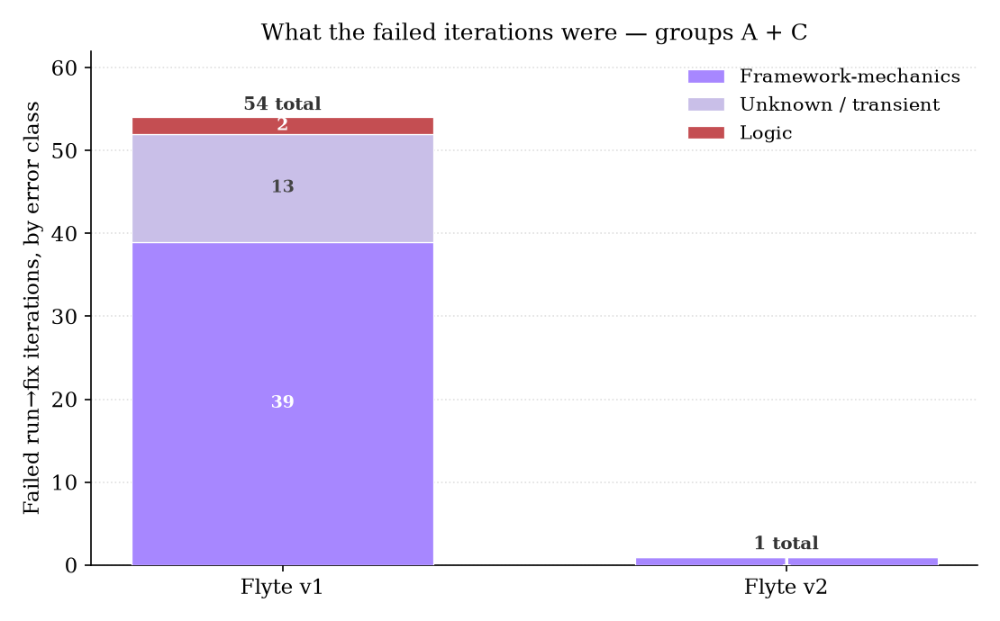
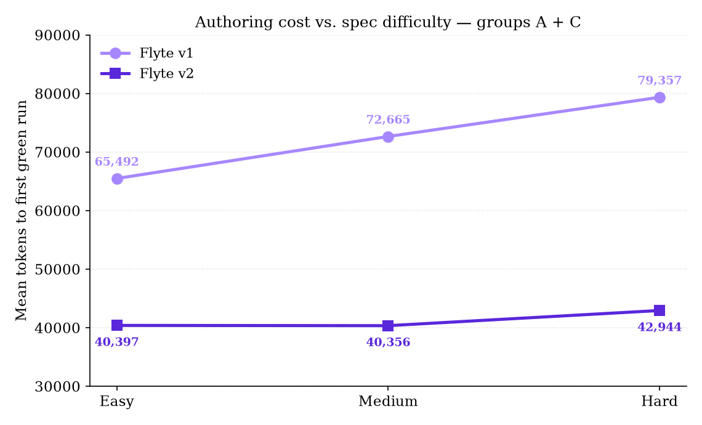

Two years ago the person who read a Flyte pipeline before it ran was the person who wrote it. Today it is increasingly a coding agent, drafting, running, and iterating on the pipeline glue while the human reviews a diff. That shift changes what "good framework ergonomics" means: not whether a human finds the DSL learnable over a career, but whether a language model — with a fixed context budget and a fixed number of turns — can turn a plain-language spec into a passing run without burning tokens on the framework's own mechanics.
Flyte v1's authoring model is a domain-specific graph DSL: @workflow functions that don't execute Python, they trace it into a compiled graph of promises. Flyte v2's authoring model is ordinary async/await Python: calling a task creates a live action, and a value it returns is a value, not a graph handle. This report measures what that difference costs an agent in tokens and iterations — and separately, what it makes structurally impossible.
We report a single controlled study, run for real: the same subagent harness, the same model (claude-sonnet-5, no override), an equal-token-budget cheatsheet per arm, and 48 trial trajectories graded by a live oracle against a shared Flyte cluster running both SDKs. This mirrors the house methodology of the companion scaling studies in this series — real clusters, no simulation, failures reported rather than retried — applied to the agent, not the pod.
The mechanism behind "v2 is easier to write" is concrete, not a vibe:
| Dimension | Flyte v1 | Flyte v2 |
|---|---|---|
| Authoring | DSL, promise parsing | Real async Python |
| Control flow | conditional, map task | Native for / if / try |
| Dynamism | static / dynamic / eager | One model — just Python |
| Compile step | Backend graph compiler | None — you just run it |
| Errors | Retries declared on graph | Typed exceptions, readable |
Each row is a place an agent can spend its context on framework mechanics instead of the task: choosing among three dynamism modes instead of one, emitting a DSL construct instead of the native Python dense in its training data, or decoding a backend compiler's graph rejection instead of a Python traceback it can fix by reflex. Section 4 turns "the mechanism is concrete" into a number.
Holding the agent, the model, and the documentation budget constant, a coding agent completes more pipeline-authoring tasks correctly, in fewer tokens and fewer run→fix iterations, when the target is Flyte v2 than when it is Flyte v1.
Twelve framework-agnostic specs, written in plain language and never naming a Flyte API, graded easy→hard in three groups:
| Group | Spec | Diff. | Tests |
|---|---|---|---|
| A — core | etl | easy | chain two tasks |
| fanout_map | easy | static fan-out | |
| conditional | medium | runtime branch | |
| dynamic_fanout | medium | data-dep. width | |
| fit_eval | hard | multi-stage outputs | |
| B — v2-only | oom_retry | hard | catch OOM, retry |
| circuit_breaker | hard | race, cancel losers | |
| agent_loop | hard | checkpointed loop | |
| C — applied ML | etl_join | medium | join + group-by |
| train_classifier | hard | train + predict | |
| hpo | hard | sweep, pick best | |
| batch_inference | medium | batched inference |
Groups A and C are the head-to-head race — every spec is expressible in both arms. Group B specs are the value-dependent, in-process control-flow patterns Section 6 argues v1 cannot express even with @dynamic; there the v1 arm is expected to record infeasible, which is itself the result.
Same model and turn budget on both arms; K=2 trials per spec per arm (seeds 0, 1) using identical randomized inputs across arms, verified byte-for-byte; failed or infeasible trials recorded as-is, never relaunched for a better number; cheatsheets kept within 3.6% of each other by token count. Group B's reference solutions were never shown to a trial subagent as an answer key.
Flyte v2 is newer, so the model has seen less of it in pretraining — a real headwind for the v2 arm, not a thumb on the scale for our hypothesis. We do not control this away; we state it and let the result speak: v2 wins decisively despite less training exposure, which means the mechanism in Section 2 (v2 is ordinary Python, not a bespoke DSL) is doing real work, not riding a training-data advantage. If anything, the measured gap is a conservative estimate of the ergonomic gap in steady state.
On the nine specs both arms can express (groups A + C, 18 trials per arm, 100% success on both), v2 reaches a passing run in 1.78× fewer tokens on average (73,301 vs 41,228; median 69,716 vs 41,697) and needs a 5× lower median iteration count (5.0 vs 1.0; mean 4.0 vs 1.06). Seventeen of eighteen v2 trials passed on the very first attempt, versus two of eighteen on v1.

The gap is not driven by one or two outlier specs. Every spec in groups A and C shows v1 costing 1.6–1.9× the tokens of v2, from the easiest spec (fanout_map, 1.61×) to the hardest (train_classifier, 1.91×):

Across the 18 group-A/C v1 trials, subagents logged 54 failed run→fix iterations before reaching green; across the matching 18 v2 trials, they logged 1. Of v1's 54, only 2 were genuine logic bugs — the other 52 were friction between the cheatsheet's documented happy path and what actually submitting a script to a live cluster requires.

The v1 framework-mechanics failures cluster into three root causes, rediscovered independently by nearly every trial rather than solved once and reused:
None of these are conceptual mistakes about the pipeline; they are exactly the register-and-fast-package mechanics that a native async-Python model sidesteps by not requiring a separate graph-registration step at all. Fig. 5 puts a second number on the same effect: v1's authoring cost climbs with spec difficulty, v2's does not.

Group B is not a harder efficiency test; it is a capability test. Three patterns each need a value-dependent decision made from a task's real output, in-process, that changes what runs next — and @dynamic does not rescue this, because it builds a static sub-graph from a runtime value before execution; it cannot react to results as they land, since inside it a task's result is a graph promise, not a real value to branch on, await, or race.
Every one of the 6 v1 trials against these three specs independently reached this conclusion from the cheatsheet alone, without being told the answer or shown a reference solution, and stopped — five of six in just 2 tool calls, a median 31,357 tokens — rather than fake a workaround that would have hardcoded the answer instead of expressing the pattern. That is the result: 0% success, 6/6 infeasible, a unanimous, independently-replicated verdict on the same architectural limit.
v2 solved all 6, at a mean cost (52,818 tokens, 1.7 iterations) in the same range as an ordinary group-A/C trial — these are not exotic features bolted onto v2, they are the direct consequence of a task call producing a real awaitable instead of a graph handle. The agent-authored solutions below are the real, cluster-verified code from three separate trials, lightly trimmed for space:
@env.task
async def worker(allotted_mb: int, required_mb: int) -> int:
if allotted_mb < required_mb:
raise flyte.errors.OOMError("OOMError", "out of memory")
return allotted_mb
@env.task
async def drive(tiers: list[int], required_mb: int) -> int:
for mb in tiers:
try:
return await worker.override(
resources=flyte.Resources(memory=f"{mb}Mi")
)(mb, required_mb)
except flyte.errors.OOMError:
continue # bump memory, re-run the SAME step
raise RuntimeError("OOM at max tier")
In v1, retries are declared statically on the graph before it runs — there is no way to catch a live OOMError from a specific node and re-launch that exact node with a bigger resource envelope as ordinary control flow.
tasks = {asyncio.create_task(cand(i, delays[i], i in fail)): i
for i in range(len(delays))}
failures, pending = 0, set(tasks)
while pending:
done, pending = await asyncio.wait(
pending, return_when=asyncio.FIRST_COMPLETED)
for t in done:
if t.exception() is None:
for p in pending: p.cancel()
return tasks[t] # first success wins
failures += len(done)
if failures > max_failures:
for p in pending: p.cancel()
return -1 # circuit opens
A v1 task promise is a graph handle, not an awaitable future — it cannot be fed to asyncio.wait(FIRST_COMPLETED), cancelled in flight, or counted against a live failure budget mid-race.
@flyte.trace
async def add(acc: int, k: int) -> int:
return acc + k
@flyte.trace
async def mul(acc: int, k: int) -> int:
return acc * k
@env.task
async def run_program(start: int, program: list) -> int:
acc = start
for op, arg in program: # each call is a checkpointed step
acc = await (add(acc, arg) if op == "add" else mul(acc, arg))
return acc
In v1 the only unit of recovery is a task, and a task is a pod — a durable N-step loop is either one opaque uncheckpointed task or a pod-per-step explosion. @flyte.trace checkpoints each call in-process; nothing pod-shaped appears in this solution at all.
We report these plainly, because a rigorous number is more convincing than a clean one to the audience this report is for.
Cross-trial collisions. All 24 trials per arm ran concurrently against one shared cluster project, and every trial's script shares a workflow/module name. Several v1 trials explicitly diagnosed a stale registration left by a concurrently-running sibling trial as one of their failed iterations — a confound specific to parallel execution, applying to both arms, that likely inflated both arms' iteration counts somewhat above a fully isolated baseline.
Reference-solution leakage. Trial subagents write from a shared repository checkout; a few self-reports describe consulting a sibling trial's already-passing solution, and — more often on the v2 arm — the project's held-out reference solutions, which the harness's own fairness rule says to keep out of context. Nothing in the trial scaffold technically prevented reading arbitrary repository paths. This plausibly understates the true gap rather than inflates it: v2 was already closer to first-try-correct, so it had less room to benefit from peeking, while v1 had further to fall back to without it.
Sample size. Two trials per (spec, arm) is enough to see a consistent 1.6–1.9× band across nine independent specs and a unanimous 6/6-vs-0/6 split on group B, but is not enough to report tight confidence intervals per spec. The per-spec consistency in Fig. 3, not any single cell, is the strength of the result.
Reason 1 in the migration case for Flyte v2 has, until now, been a plausible mechanism: v2 is ordinary Python, so an agent should need less context to use it correctly. This report turns that plausibility into a number, measured the same way the companion scaling studies measure runtime cost — real workloads, a real cluster, a live grader, no simulation. The result lines up with the mechanism: v1's failures are almost entirely mechanical (54 of 54 non-logic errors are framework friction), the ratio holds within a narrow band across nine unrelated specs, and the gap widens with task difficulty rather than narrowing — consistent with harder specs exercising more of exactly the DSL surface that costs v1 tokens. Group B adds a second, independent finding of a different kind: for three realistic patterns, this is not an efficiency gap an agent can grind through with more budget. v1 is structurally unable to express them; v2 solves them at ordinary cost.
Migration cost for this specific gap is low. v2 is the same SDK lineage and the same plugin ecosystem as v1 — adopting it does not require an agent (or its operators) to learn a new tool, only fewer of the current one's quirks.
Holding the agent, the model, and the documentation budget constant, a coding agent authoring Flyte pipelines is strictly better off on v2 along every axis this study measured: 1.78× fewer tokens and a 5× lower median iteration count on the patterns both frameworks can express, at identical 100% success; a near-total absence of framework-mechanics failures (1 vs. 54); authoring cost that stays flat rather than climbing with task difficulty; and a unanimous, independently-replicated capability gap on patterns that need live, value-dependent control flow. There is no measured dimension on which v1 wins.
Raw trial data — 42 solution.py files (every trial that produced a run; the 6 v1 group-B trials correctly wrote none), inputs, logs, and one JSON row for all 48 trials — and the harness that produced them are public: github.com/flyteorg/flyte-benchmarks, under raw-results/flyte-agent-benchmark/ and scripts/flyte-agent-benchmark/. Reproduce it, or extend it with your own specs.